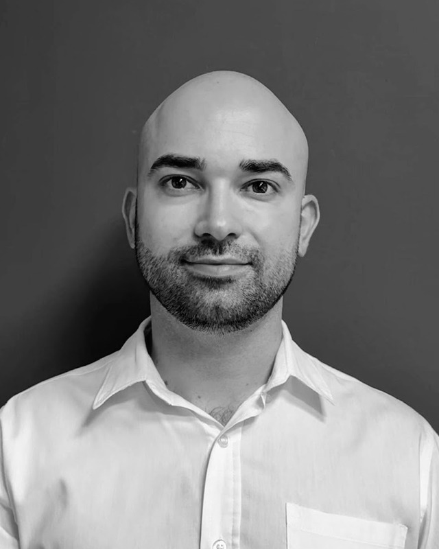

Gestión de proyectos · coordinación de equipo · IA aplicada
Una década resolviendo problemas en contextos distintos: comunicación audiovisual, ventas técnicas B2B y, hoy, coordinación de un equipo técnico. Construyo con IA las herramientas que ese trabajo necesita, sin escribir código de producción: el criterio importa más que la sintaxis.
Experiencia
Liderazgo
Formación
Intercambio en la Universidade de Santiago de Compostela.
Documento de diseño, balance de juego y concepto propio de principio a fin.
Gestión de eventos y de equipos en el ecosistema esports.
Idiomas
Un proyecto en profundidad. La página 1 ya es el CV completo: esto es para quien quiera ver cómo trabajo.
Un equipo técnico de mantenimiento de carretillas elevadoras (Cataluña y Baleares) necesita repartir su carga cada día, cada mes y cada año: qué máquina lleva cada técnico, qué ruta, qué prioridad. Es un problema real de asignación y rutas de técnicos (Technician Routing and Scheduling Problem, TRSP en la literatura), no un ejercicio de clase: cada decisión mal tomada es un viaje de más o un cliente esperando de más.
El motor reparte en tres capas que nunca se pisan entre sí: una dura que filtra antes de puntuar (técnico habitual, zona, habilitación), una real que pondera cercanía contra equidad de carga, y una de desempate que nunca saca una máquina de su zona. Se resuelve por aproximación sucesiva y búsqueda local: mover y cambiar piezas hasta que no hay una mejora clara que hacer.
Lo dirigí y lo construí con Claude sin escribir yo el código de producción: no vengo del código, vengo del problema. Está calibrado con datos reales de productividad y desplazamiento del equipo, no con estimaciones, y contrastado contra la literatura profesional del sector antes de dar cualquier decisión por buena. Cada cambio pasa primero por una suite de regresión: si empeora la línea base, no se acepta.
Hoy es un prototipo funcional que el equipo usa de forma informal, no un despliegue oficial de la empresa. Sigue vivo: cada mejora se prueba primero contra la línea base antes de entrar.
Ficha técnica
El mismo movimiento se repite en todo lo que construyo: encontrar el punto donde el criterio manual ya no aguanta la escala, y construir con IA la pieza que lo sustituye por algo medible y que se puede volver a probar. No escribo el código de producción por gusto de programar: lo hago porque es la forma más rápida de comprobar si una idea de proceso funciona antes de pedirle a alguien que la implemente en serio.